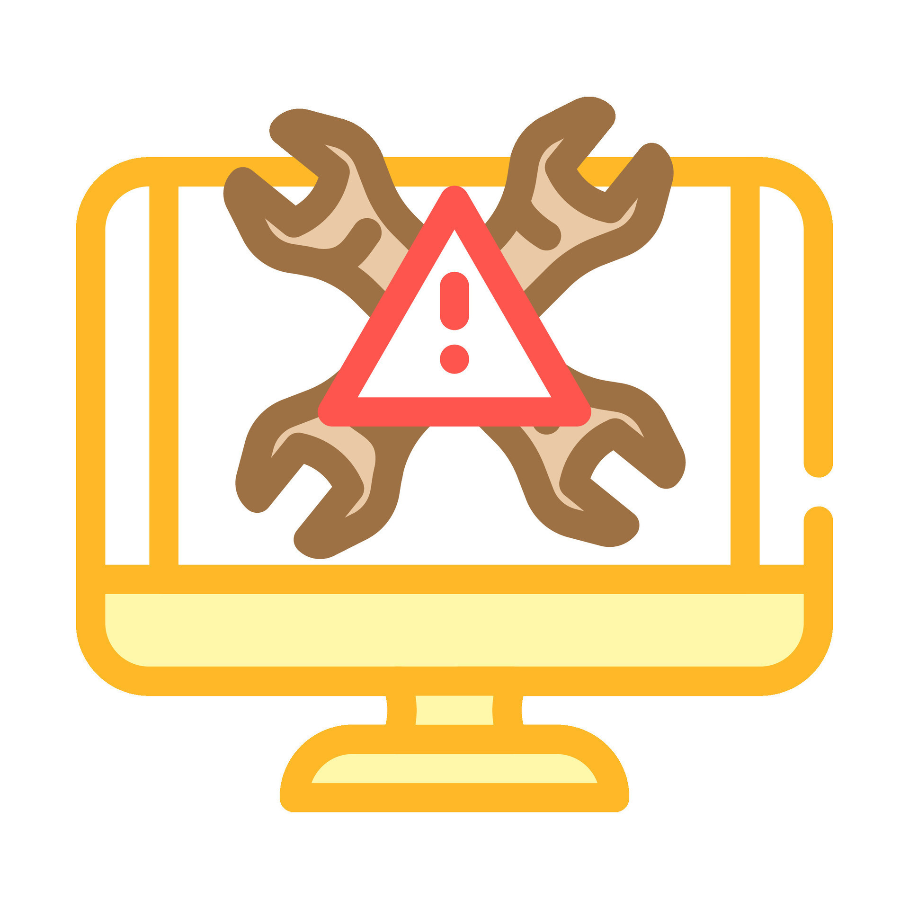

The Troubleshooting section helps users fix common laptop problems like power issues, screen flickering, sound failures, and WiFi connectivity. Each topic includes a visual reference and a list of practical solutions useres can try on thier own. Whether the laptop won’t turn on or a cursor keeps jumping, this guide is designed to walk users through quick fixes and restore functionality without needing professional help. The section also includes popular laptop brand troubleshooting guides for any further questions.